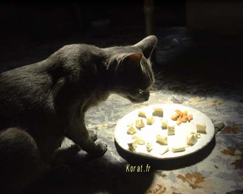

Korat et Alimentation
Le Korat est une race qui sait gérer son alimentation. C'est très rare. De l'eau et suffisamment de croquettes et il peut rester seul deux semaines dans un appartement. Après, il faut passer changer la litière, simplement. Attention à l'eau en revanche : un petit bol ou une bassine peuvent s'évaporer aussi vite en été ...
Pour de plus longues absences : la technique de la bouteille d'eau renversée (expérience de Torricelli) et du bac à sable (plus vaste pouvant durer plus des 15 jours des litières de nos jours) semble plus raisonnable ... Voir la page concernant Torricelli ici.
Les mâchoires des chats sont faites pour cisailler et non mâcher, il ne possède pas d'enzymes digestives, son estomac est fortement sollicité, ses intestins sont courts. Ils possèdent un odorat très développé mais en revanche des papilles gustatives en faible quantité et ne peuvent pas goûter les aliments.
Les recherches menées depuis 30 ans ont permis de passer du stade de la simple alimentation à celui de de la nutrition adaptée à la santé d'un chat.
Nourrir son chat n'est pas faire comme pour nous !
On ne nourrit pas son chat comme soi-même, simplement parce que l'homme est omnivore et le chat carnivore. Le besoin nutritionnel est différent et chaque organisme adapté à son type d'alimentation.
Les besoins du chat se décomposent en protéines (viandes...) pour 40% (10% pour l'homme), en lipides (graisses...) 35% (30% pour l'homme) et en glucides (céréales...) 25% (60% pour l'homme).
Alimenter un chat comme un homme est dangereux pour son organisme : trop riche en glucides et mal dosé en lipides.
Gourmet le chat ?
Non : un chat possède 500 papilles gustatives (un homme 9000), c'est un mauvais goûteur.
Oui : un chat possède 60 à 65 millions de cellules pour l'odorat (5 à 20 millions pour l'homme)
Dentition d'un chat ...
Les chats possèdent 30 dents dont 12 incisives, 4 canines, 10 pré carnassières et 4 carnassières. Comme c'est un carnivore prédateur, toutes ses dents sont tranchantes même les carnassières (molaires).
Digérer pour un chat et pour un homme ...
Le chat ne possède pas d'enzymes digestives dans sa salive : pas de pré digestion, les aliments arrivent directement dans l'estomac.
Le volume de l'estomac d'un chat étant de 0,3 litre, c'est 58 à 60% de son tube digestif alors qu'il contient 1,3 litres pour un homme soit 10% de notre tube digestif. Le poids du tube digestif correspond de 2,8 à 3,5% du poids du chat alors qu'il constitue 11% de celui d'une personne.
Le nombre de bactéries constituant la flore intestinale est d'un million par gramme chez le chat et 10 fois plus pour un homme. Le chat étant carnivore digère moins de variétés d'aliments que l'homme omnivore.
La longueur du gros intestin est de 0,3 à 0,4 mètre chez les chats (1,5 mètre chez les hommes). L'intestin grêle est court chez le chat : il ne permet pas de bien digérer les glucides.
La digestion du chat est rapide et les aliments non adaptés au régime carnivore sont rejetés en fortes proportions. Son estomac est constamment actif. Le chat aime faire de nombreux petits repas (15 à 20 par jour). L'acidité de l'estomac des chats est bien plus forte que celle de l'estomac des hommes permettant la digestion des os et la lutte contre les mauvaises bactéries ingérées.
Appellations trompeuses
Il faut se méfier des appellations trompeuses du style "à l'agneau", "au poulet", etc. Ce type d'inscription est utilisé quand l'aliment contient entre 4% minimum et 14% maximum de l'ingrédient cité.
Attention également quand la viande est incorporée "fraîche" et non déshydratée, car l'eau contenue dans la viande est alors comptée comme viande ! Ainsi 20% de viande fraîche (contenant 70% d'eau) n'apporteront que 6% de nutriments.

Nourriture du Korat
Une nourriture à base de croquettes de la meilleure qualité avec quelques morceaux de viandes quelques fois par mois pour affiner les dents et de l'eau est conseillée aux Korats.
A lire également pour tout savoir sur la race :